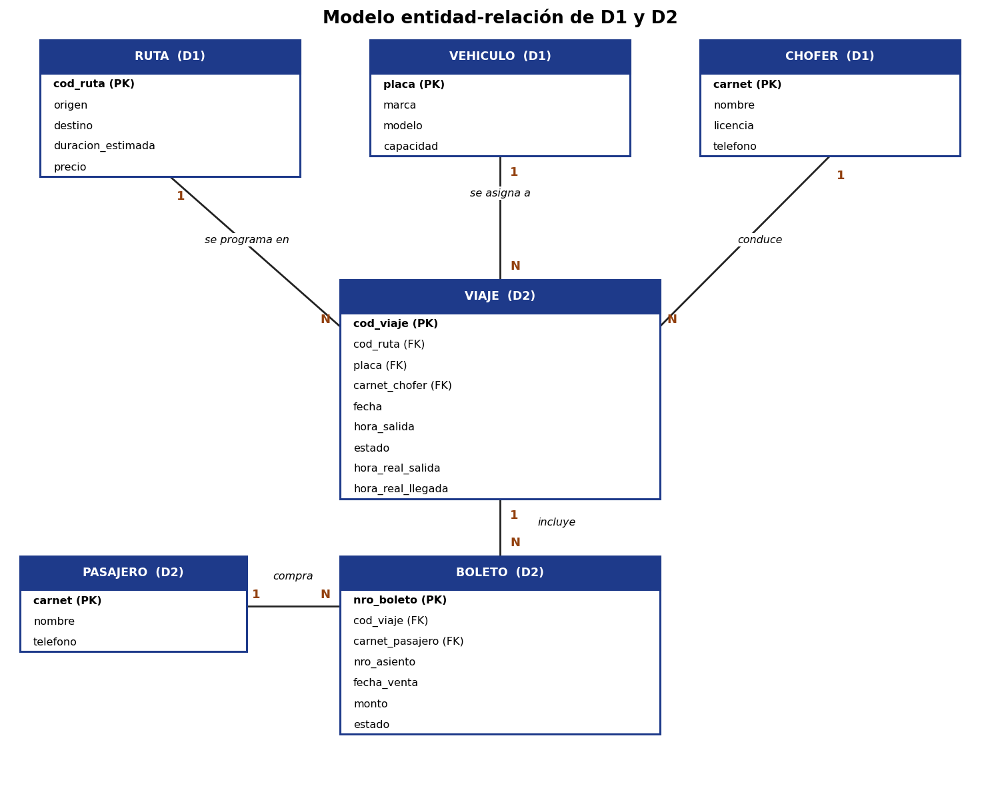

Análisis estructurado
Parte II: modelo de datos.
6. Modelo de datos
En D1 guardamos ruta, vehículo y chofer, y en D2 viaje, boleto y pasajero. Una misma ruta, vehículo o chofer puede estar en muchos viajes, un viaje tiene muchos boletos y un pasajero puede comprar varios boletos.

Próxima publicación
Nos falta el diseño estructurado: el diagrama de estructura y las interfaces principales.